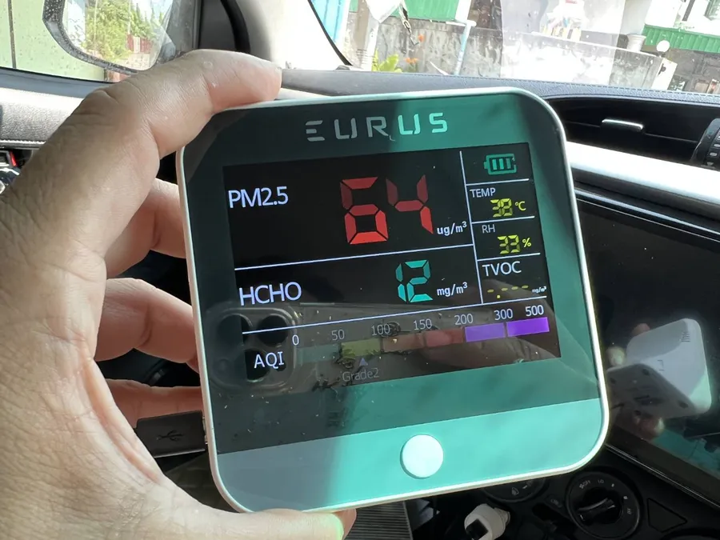
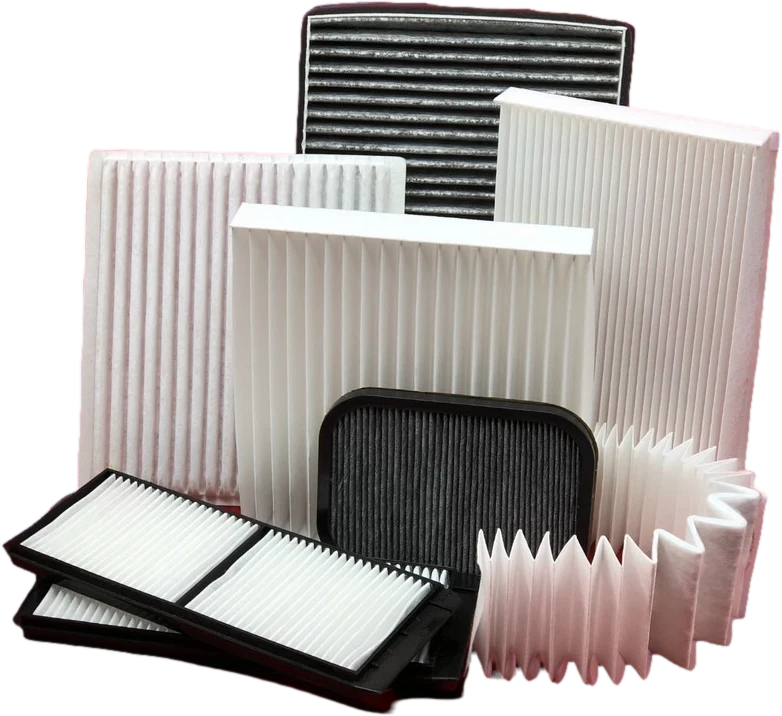

บทความน่ารู้เรื่องกรองแอร์รถยนต์
รวมความรู้เรื่องแผ่นกรองแอร์รถยนต์ ตั้งแต่ระยะเปลี่ยน วิธีเปลี่ยนด้วยตัวเอง ไปจนถึงการเลือกกรองแอร์ PM2.5 และกรองแอร์คาร์บอนให้เหมาะกับรถของคุณ

กรองแอร์รถยนต์ควรเปลี่ยนเมื่อไหร่? สังเกต 6 อาการกรองแอร์ตันก่อนสายเกินไป
รู้ระยะเปลี่ยนกรองแอร์รถยนต์ที่เหมาะสม พร้อม 6 อาการที่บอกว่ากรองแอร์ตัน และผลเสียเมื่อกรองแอร์สกปรกต่อสุขภาพและระบบแอร์
อ่านบทความ →
วิธีเปลี่ยนกรองแอร์รถยนต์ด้วยตัวเอง ทำได้ใน 10 นาที ไม่ต้องใช้เครื่องมือพิเศษ
ขั้นตอนเปลี่ยนกรองแอร์รถยนต์ด้วยตัวเองแบบเข้าใจง่าย ตั้งแต่หาตำแหน่งกรองแอร์ ถอดแผ่นเก่า ใส่แผ่นใหม่ให้ถูกทิศทางลม และข้อควรระวัง
อ่านบทความ →
กรองแอร์รถยนต์ กับ กรองอากาศรถยนต์ ต่างกันอย่างไร? เข้าใจให้ถูกก่อนซื้อ
ไขข้อสงสัยกรองแอร์รถยนต์กับกรองอากาศรถยนต์ต่างกันอย่างไร ทั้งหน้าที่ ตำแหน่งติดตั้ง รอบการเปลี่ยน และเหตุผลที่ใช้แทนกันไม่ได้
อ่านบทความ →
กรองแอร์รถยนต์ยี่ห้อไหนดี? 5 เกณฑ์เลือกกรองแอร์ PM2.5 และแบบคาร์บอนให้คุ้มค่า
5 เกณฑ์เลือกกรองแอร์รถยนต์ให้เหมาะกับการใช้งาน เปรียบเทียบกรองแอร์รถยนต์ PM2.5 กับกรองแอร์คาร์บอน และสิ่งที่ควรดูก่อนเลือกซื้อหรือสั่งราคาส่ง
อ่านบทความ →